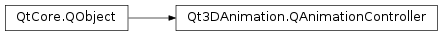

Qt3DAnimation.QAnimationController¶
Synopsis¶
Functions¶
- def
activeAnimationGroup() - def
addAnimationGroup(animationGroups) - def
animationGroupList() - def
entity() - def
getAnimationIndex(name) - def
getGroup(index) - def
position() - def
positionOffset() - def
positionScale() - def
recursive() - def
removeAnimationGroup(animationGroups) - def
setAnimationGroups(animationGroups)
Slots¶
- def
setActiveAnimationGroup(index) - def
setEntity(entity) - def
setPosition(position) - def
setPositionOffset(offset) - def
setPositionScale(scale) - def
setRecursive(recursive)
Signals¶
- def
activeAnimationGroupChanged(index) - def
entityChanged(entity) - def
positionChanged(position) - def
positionOffsetChanged(offset) - def
positionScaleChanged(scale) - def
recursiveChanged(recursive)
Detailed Description¶
A controller class for animations
Qt3DAnimation.QAnimationControllerclass controls the selection and playback of animations. The class can be used to find all animations fromQt3DCore.QEntitytree and createQAnimationGroupsfrom the animations with the same name. The user can select which animation group is currently controlled with the animation controller by setting the active animation. The animation position is then propagated to that group after scaling and offsetting the provided position value with thePySide2.Qt3DAnimation.Qt3DAnimation::QAnimationController.positionScale()andPySide2.Qt3DAnimation.Qt3DAnimation::QAnimationController.positionOffset()values.Note
that the animation controller doesn’t have internal timer, but instead the user is responsible for updating the position property in timely manner.
-
class
PySide2.Qt3DAnimation.Qt3DAnimation.QAnimationController([parent=nullptr])¶ Parameters: parent – PySide2.QtCore.QObjectConstructs a new
QAnimationControllerwithparent.
-
PySide2.Qt3DAnimation.Qt3DAnimation.QAnimationController.activeAnimationGroup()¶ Return type: PySide2.QtCore.intSee also
PySide2.Qt3DAnimation.Qt3DAnimation::QAnimationController.setActiveAnimationGroup()
-
PySide2.Qt3DAnimation.Qt3DAnimation.QAnimationController.activeAnimationGroupChanged(index)¶ Parameters: index – PySide2.QtCore.int
-
PySide2.Qt3DAnimation.Qt3DAnimation.QAnimationController.addAnimationGroup(animationGroups)¶ Parameters: animationGroups – PySide2.Qt3DAnimation.Qt3DAnimation::QAnimationGroupAdds the given
animationGroupto the controller.
-
PySide2.Qt3DAnimation.Qt3DAnimation.QAnimationController.animationGroupList()¶ Return type: Returns the list of animation groups the conroller is currently holding.
-
PySide2.Qt3DAnimation.Qt3DAnimation.QAnimationController.entity()¶ Return type: PySide2.Qt3DCore.Qt3DCore::QEntitySee also
PySide2.Qt3DAnimation.Qt3DAnimation::QAnimationController.setEntity()
-
PySide2.Qt3DAnimation.Qt3DAnimation.QAnimationController.entityChanged(entity)¶ Parameters: entity – PySide2.Qt3DCore.Qt3DCore::QEntity
-
PySide2.Qt3DAnimation.Qt3DAnimation.QAnimationController.getAnimationIndex(name)¶ Parameters: name – unicode Return type: PySide2.QtCore.intReturns the index of the animation with
name. Returns -1 if no AnimationGroup with the given name is found.
-
PySide2.Qt3DAnimation.Qt3DAnimation.QAnimationController.getGroup(index)¶ Parameters: index – PySide2.QtCore.intReturn type: PySide2.Qt3DAnimation.Qt3DAnimation::QAnimationGroupReturns the AnimationGroup with the given
index.
-
PySide2.Qt3DAnimation.Qt3DAnimation.QAnimationController.position()¶ Return type: PySide2.QtCore.floatSee also
PySide2.Qt3DAnimation.Qt3DAnimation::QAnimationController.setPosition()
-
PySide2.Qt3DAnimation.Qt3DAnimation.QAnimationController.positionChanged(position)¶ Parameters: position – PySide2.QtCore.float
-
PySide2.Qt3DAnimation.Qt3DAnimation.QAnimationController.positionOffset()¶ Return type: PySide2.QtCore.floatSee also
PySide2.Qt3DAnimation.Qt3DAnimation::QAnimationController.setPositionOffset()
-
PySide2.Qt3DAnimation.Qt3DAnimation.QAnimationController.positionOffsetChanged(offset)¶ Parameters: offset – PySide2.QtCore.float
-
PySide2.Qt3DAnimation.Qt3DAnimation.QAnimationController.positionScale()¶ Return type: PySide2.QtCore.floatSee also
PySide2.Qt3DAnimation.Qt3DAnimation::QAnimationController.setPositionScale()
-
PySide2.Qt3DAnimation.Qt3DAnimation.QAnimationController.positionScaleChanged(scale)¶ Parameters: scale – PySide2.QtCore.float
-
PySide2.Qt3DAnimation.Qt3DAnimation.QAnimationController.recursive()¶ Return type: PySide2.QtCore.boolSee also
PySide2.Qt3DAnimation.Qt3DAnimation::QAnimationController.setRecursive()
-
PySide2.Qt3DAnimation.Qt3DAnimation.QAnimationController.recursiveChanged(recursive)¶ Parameters: recursive – PySide2.QtCore.bool
-
PySide2.Qt3DAnimation.Qt3DAnimation.QAnimationController.removeAnimationGroup(animationGroups)¶ Parameters: animationGroups – PySide2.Qt3DAnimation.Qt3DAnimation::QAnimationGroupRemoves the given
animationGroupfrom the controller.
-
PySide2.Qt3DAnimation.Qt3DAnimation.QAnimationController.setActiveAnimationGroup(index)¶ Parameters: index – PySide2.QtCore.intSee also
PySide2.Qt3DAnimation.Qt3DAnimation::QAnimationController.activeAnimationGroup()
-
PySide2.Qt3DAnimation.Qt3DAnimation.QAnimationController.setAnimationGroups(animationGroups)¶ Parameters: animationGroups – Sets the
animationGroupsfor the controller. Old groups are cleared.
-
PySide2.Qt3DAnimation.Qt3DAnimation.QAnimationController.setEntity(entity)¶ Parameters: entity – PySide2.Qt3DCore.Qt3DCore::QEntitySee also
PySide2.Qt3DAnimation.Qt3DAnimation::QAnimationController.entity()
-
PySide2.Qt3DAnimation.Qt3DAnimation.QAnimationController.setPosition(position)¶ Parameters: position – PySide2.QtCore.floatSee also
PySide2.Qt3DAnimation.Qt3DAnimation::QAnimationController.position()
-
PySide2.Qt3DAnimation.Qt3DAnimation.QAnimationController.setPositionOffset(offset)¶ Parameters: offset – PySide2.QtCore.floatSee also
PySide2.Qt3DAnimation.Qt3DAnimation::QAnimationController.positionOffset()
-
PySide2.Qt3DAnimation.Qt3DAnimation.QAnimationController.setPositionScale(scale)¶ Parameters: scale – PySide2.QtCore.floatSee also
PySide2.Qt3DAnimation.Qt3DAnimation::QAnimationController.positionScale()
-
PySide2.Qt3DAnimation.Qt3DAnimation.QAnimationController.setRecursive(recursive)¶ Parameters: recursive – PySide2.QtCore.boolSee also
PySide2.Qt3DAnimation.Qt3DAnimation::QAnimationController.recursive()
© 2018 The Qt Company Ltd. Documentation contributions included herein are the copyrights of their respective owners. The documentation provided herein is licensed under the terms of the GNU Free Documentation License version 1.3 as published by the Free Software Foundation. Qt and respective logos are trademarks of The Qt Company Ltd. in Finland and/or other countries worldwide. All other trademarks are property of their respective owners.